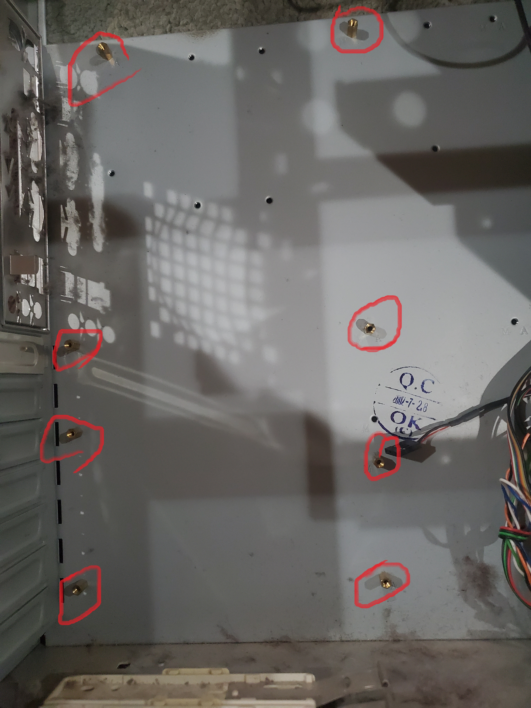

Setting up the Tower
This page will walk you through the process of how to set up the tower and prep it for assembly.
Setting up the tower is a very simple task as there is nothing to install or connect, you're just making
sure that tower is ready to go, but more importantly, that you are ready to go (i.e. you have all the
parts, tools, manuals, and resources you need, so you don't have to leave the assembly area to get something).
- To set up the tower, you simply have to make sure that both side panels (if both come off) are taken off
and the box with all the screws you will need and front panel wires are out of the way. It should look
something like the image to the right.
- More importantly, you have to make sure you are ready for this task; these are the tasks you should already
have done and tools you need to have on hand to ensure a smooth assembly:
- Make sure you are in a well lit, and DUST-FREE environment on a hard surface of some kind as to minimize
the risk of losing any small screws in the event they are dropped.
- Make sure you have all the tools you will need on hand, this will vary depending on the components you have
so make sure to have read the instruction manuals beforehand, so you know all the tools you will need.
- Make sure to ground yourself (in general you want to ground yourself everytime before handling a
component, as a simple shock is more than enough to fry the components). There are also special bracelets
that prevent your body from building a static charge, so it wouldn't hurt to have one of those.
- Have the manuel for every component on hand, this site is a simple general walkthrough of how to
assemble a computer NOT a replacement, especially because installation instructions vary by
manufacturer.
Installing the Motherboard
The goal of this page is to walk you through the process of installing the motherboard.
To reiterate, this is NOT a replacement for using the manual as the manuals provide
the specific instructions for your chosen component. It's just meant to lay down a path for
you to follow, so you have a general idea to where to go; the manuel's are your map so you
know exactly what you need to do next.
- Now that you are ready to install the motherboard, first lay the tower on its side, with the open side up.
Also, from the box of screws that came with the tower, grab all the screws that will be used to anchor the
the motherboard to the tower. To figure out what screws those are, reference the manual that came with the
case; it'll have a table in it that lists all the different types of screws, the number you should have
and what they are used for.
-
Once you have the screws and the case is on its side, locate the holes in the tower that will be how the
motherboard is anchored to the case.

-
Now that you've identified the places where the motherboard will anchor to the tower, find the holes in
motherboard that will align to the holes in the tower.

- Once you find both sets of holes carefully place the motherboard into case making sure the two sets of holes line up
After the motherboard is in place, anchor the motherboard to the tower by putting a screw in each hole
and use a screwdriver to tighten the screw take care not to accidentally touch the motherboard with the
screwdriver lest you risk damaging the board.
-
Now that the motherboard is in place, we can connect the motherboard to the front panel of the tower using
using the wires coming from the front panel. Connecting the motherboard to the front panel makes the
power-on and reset buttons, headphone and microphone jacks, and USB ports on the front panel work.
To correctly connect the wires, you need to reference the motherboard manuel and look for something like
the image to the right. After that, it's a simple matching game, the female connectors from the front panel
are labelled, so put them in the right spot according to the motherboards manual.
Congratulations, you've now successfully installed your motherboard.
Installing the CPU
The purpose of this page is to walk you through the steps to install your CPU on your motherboard. If at any point
the steps are not clear enough, and you don't know exactly what to do, consult the manual, DO NOT guess.
Even though AMD and Intel CPUs have different sockets the process of installing the CPUs is practically the same.
So, there is no need to have two separate lists. The steps for installing the CPU are as follows:
-
First you want to take a look at the CPU Socket, you want to look for an arrow in one of the corners that
looks something like the image to the right. There is a similar arrow on the CPU, and using the the two
arrows is how you know the correct orientation for the CPU to be in for installation as it matters.

-
Next you want to lift-up the latch that is what anchors the CPU into the socket, and if it is an Intel CPU
lift up the cover as well.
-
Lay down the CPU into the socket using the arrows in the corners of the socket and CPU to make sure it is
aligned correctly.

-
Finally pull down the cover (if an Intel Socket), and pull down the latch until you hear a click.
Congratulations, your CPU is now installed.
Installing the GPU
This article will cover the steps to install the GPU. As always, consult the manual if you don't see the path
in front of you clearly. The steps to install the GPU are as follows:
-
First you want to identify the expansion slot that the GPU will go in. As explained in the motherboard section,
the GPU goes in the expansion slots (also known as the PCI-Express slots). While there are a handful of
PCI-Express slots, there is only one that the GPU can go in, the PCIe x 16 slot. Which is easily
identified as the longest expansion slot. Though if you are having trouble determining the right slot
consult the motherboard manual.

-
There is a clip on the right side of the PCIe slot which will help hold the GPU in place once installed.
You want to make sure the clip is in an open state; then you want to line up the GPU to the slot, and then
apply pressure until you hear a click.
-
Lastly, there is normally a little grove on the back panel of the GPU that matches up with a hole on the
back of the case. Take the appropriate screw, which you figure out by looking at the towers manual, and
use a screwdriver to screw the screw into the slot, providing another way to anchor the GPU.
Congratulations, the GPU is now installed.
Installing the PSU
This page will cover the steps to install the PSU; if the steps are never clear make sure to consult your manuals.
The steps to install the PSU are as follows:
- First you want to find the big hole in the back of the tower, that is where the PSU will go.
- Then you want to get the PSU into place, making sure the chord that will plug into the wall is facing out.
There are four more screw holes in the back of the case that line up with holes on the back the PSU. Using
some screws that came with the case, that is how you will anchor the PSU into place.
Congratulations, your PSU is now installed.
Installing the CPU Cooler
This page will cover the steps to install the CPU Cooler; if the steps are never clear make sure to consult your manuals.
The first few steps of the walk through will pertain to both because the installation of both is the same until the air cooled
sink is installed. A liquid cooler takes a few more steps than an air cooler, so there will be a few more steps after the installation
of the air cooled sink that will be about the liquid cooled sink, don't worry though, the additional steps for the liquid cooler will
be explicitly stated as steps for the liquid cooler.
The steps to install the CPU Cooler are as follows:
-
Start off by taking your thermal paste, which will help with heat transfer between the CPU and heat sink,
and applying a small dot in the center of the CPU. More is not usually better, especially in this case.

- Now you have to assemble and attach to the motherboard the structure that will anchor the cooler in place.
Typically, coolers nowadays provide the anchors for an Intel socket and an AMD socket, which do differ because
of the design of the two sockets. For exact instructions, I would confront your manuals, but there are several holes
in the area of the CPU socket which is where screws will go through to connect the front and back parts of the cooler
anchor.
-
Next, place the heat sink on top of the CPU while lining up the screw holes in the coolers anchor and the heat sink.
Then screw into place, taking care to screw them in tightly, but not too tightly.
-
The steps after this point will be about the liquid cooler.
Now that the heat sink is in place, there is still a radiator that needs to be installed.
In most modern computer towers, there is extra space in the top of the tower to accommodate the
radiator in addition to the fans that go up top. You just need to finesse the radiator into place
and screw it in with the long screws that came with the tower.
Congratulations, the heat sink in now installed.
Installing the RAM
This page will cover the steps to install the RAM; if the steps are never clear make sure to consult your manuals.
The steps to install the RAM are as follows:
- The RAM is one of the easiest components to install, simply find the DIMM slots, which were covered in
the motherboard section. Make sure the clips at the top and bottom of the slots are in an open state.
Orient the RAM stick so that the gap in the middle of the card lines up with the spot in the DIMM slot
Then push the stick in until you hear a click, which is the clips closing, keeping the RAM stick in place.
Repeat for each RAM stick you have.
Congratulations, your RAM is now installed.
Installing the Fans
This page will cover the steps to install the fans; if the steps are never clear make sure to consult your manuals.
The steps to install the fans are as follows:
-
Most towers, when purchased, include a singular fan with it, so you're going to need 4 additional fans (5 if you
want to replace the included fan). Three of the fans are for exhaust and two of the fans are for in take.
The two intake fans go in the front, two of the exhaust fans go up top, and the last exhaust fan is in the back.
When installing the fans, make sure that the fans will be pushing air in the right direction, something that you
can determine by looking at the side of the fan.
-
To install the front fans, carefully remove the front panel of the tower to access the area where the fans will go.
Orient the fans correctly and screw them to the tower using the longs screws that came with the tower. And put the
front panel back in place.
- To install the top fans, the process changes depending on if there is a radiator up there or not.
If you do have a radiator, just orient the fans below the radiator and screw them into the tower (take
great caution as it will be a tight squeeze. If there is no radiator, you'll have to remove the top
panel of the motherboard, slide them into place and screw them into the case.
- The back fan is the easiest; simply line it up and screw it in.
- Lastly, you have to connect the fans to the motherboard; you'll have to reference it's manual to see where,
the connections are. In the event that the motherboard doesn't have enough connectors for the fans, you'll
need a peripheral hub that will let multiple fans connect to in while only using one spot on the motherboard.
Congratulations, your fans are now installed
HDD/SDD installation
This page will cover the steps to install the HDDs/SDDs; if the steps are never clear make sure to consult your manuals.
The steps to install the HDDs/SDDs are as follows:
- To install your HDDs/SDDs take out the correctly sized tray for the drive you are installing, and lay it in
the tray silver side up, connections to the back. Anchor the drive in place with some screws and put it back into
the drive bay. Then use an SATA cable, which was provided with the motherboard, to connect the drive to the motherboard.
Then take a power connector from the PSU and plug it into the drive. Repeat for every drive you have.
Congratulations, your HDDs/SDDs are installed.